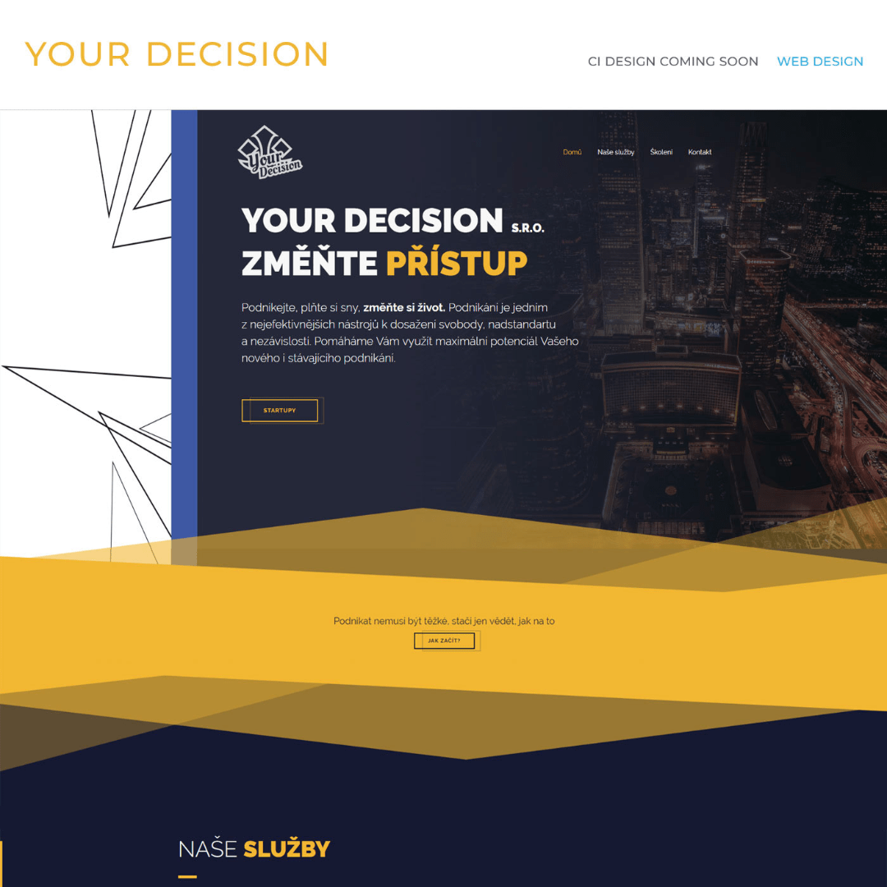

Portfolio

Blender
V aktuální době pracuji na modelech do vlastní hry. Pracovní název "Arcapunk". Modulární, optimalizovaná složitost meshů, optimalizovaný wrapping
Affinity Designer
Isometrické ilustrace ve formátu SVG optimalizované pro CSS animace i s využitím clip-path animací
Adobe Illustrator
Série logotypů pro různé klienty ve vektorovém formátu. Optimalizované pro ploter výřez, či případné použití na animace.
Sketch
Moderní UI/UX design s interaktivními prvky pomocí Frameru, včetně základů frontendu pomocí PUG/LESS

Kresba
Ruční kresba převáděná do PC, oživena o interaktivní prvky v podobě vebového komiksu. Součást diplomové práce.

Affinity Photo
Rastrové ilustrace pomocí tabletu Wacom Intuos Pro M